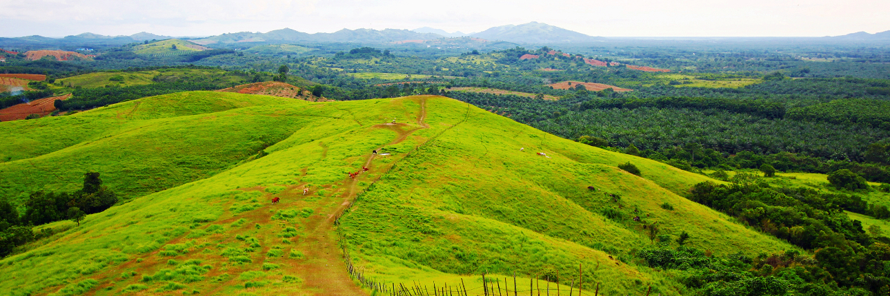

Tentang Bukit Rimpi

Bukit Rimpi merupakan sebuah perbukitan
yang ditumbuhi oleh padang savana
hijau yang dihiasi oleh hamparan rumput
Bukit Rimpi atau juga ada yang menamakan Bukit Teletubbies merupakan salah
satu destinasi wisata Kalimantan Selatan yang tepatnya berada di Desa Tampang, Pelaihari, Kabupaten Tanah Laut, Kalimantan Selatan.
Tak jarang, gerombolan hewan ternak pun terlihat di sekitar kawasan bukit sedang mencari makanan. Perpaduan bukit hijau dan hewan
ternak di sekitar bukit semakin menambah keindahan Bukit Rimpi ini. Bukit Rimpi juga merupakan salah satu spot terbaik untuk menikmati
panorama keindahan matahari terbit di pagi hari.
Akses Menuju Bukit Rimpi
Akses untuk menuju Bukit Rimpi atau Bukit Teletubbies, Anda dapat memulai perjalanannya dari Kota Banjarmasin dengan tujuan ke Kota Pelaihari.
Jarak dari Banjarmasin ke Pelaihari adalah sekitar 65 km, dan dapat ditempuh sekitar 2 jam perjalanan menggunakan kendaraan bermotor. Kemudian
arahkan kendaraan Anda menuju ke arah Tanah Bumbu, tak lama kemudian yakni sekitar 7-8 km nantinya akan melihat Desa Tampang. Kondisi jalan menuju
lokasi bukit cukup bagus, beraspal halus meskipun di beberapa titiknya kadang berlubang. Papan penunjuk dan spanduk yang bertuliskan “Parkiran Bukit Rimpi”,
akan terlihat di kanan jalan dan menunjukkan bahwa letak bukitnya berada di sebelah kanan jalan. Sesampainya di lokasi, Anda dapat langsung memarkirkan
kendaraan di laham parkir yang telah disediakan. Dari tempat parkir kendaraan, pengunjung masih harus berjalan kaki sekitar 200 m ke kaki bukitnya untuk menuju lokasi utama bukit ini.
Harga Tiket Masuk
Anda akan dikenakan bayaran tiket masuk sebesar 10.000 rupiah sudah beserta dengan biaya parkir kendaraan. Untuk parkir kendaraan roda dua, tarif parkirnya sebesar 5.000 rupiah sedangkan untuk kendaraan roda empat dienakan tarif sebesar 10.000 rupiah.
Pesan Tiket Pesawat